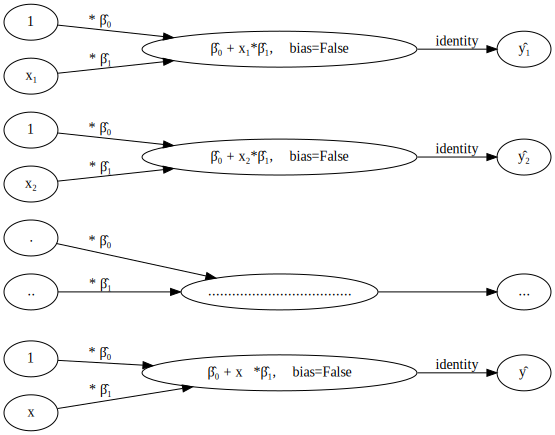
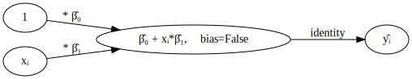
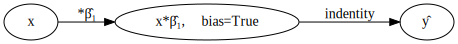
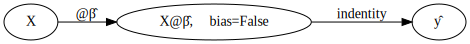
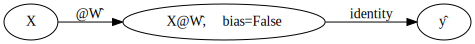

imports
\(x \to \hat{y}\) 가 되는 과정을 그림으로 그리기
- 단순회귀분석의 예시 - \(\hat{y}_i = \hat{\beta}_0 + \hat{\beta}_1 x_i, \quad i=1,2,\dots,n\)
(표현1)
#collapse-hide
gv('''
"1" -> "β̂₀ + xₙ*β̂₁, bias=False"[label="* β̂₀"]
"xₙ" -> "β̂₀ + xₙ*β̂₁, bias=False"[label="* β̂₁"]
"β̂₀ + xₙ*β̂₁, bias=False" -> "ŷₙ"[label="identity"]
"." -> "...................................."[label="* β̂₀"]
".." -> "...................................."[label="* β̂₁"]
"...................................." -> "..."[label=" "]
"1 " -> "β̂₀ + x₂*β̂₁, bias=False"[label="* β̂₀"]
"x₂" -> "β̂₀ + x₂*β̂₁, bias=False"[label="* β̂₁"]
"β̂₀ + x₂*β̂₁, bias=False" -> "ŷ₂"[label="identity"]
"1 " -> "β̂₀ + x₁*β̂₁, bias=False"[label="* β̂₀"]
"x₁" -> "β̂₀ + x₁*β̂₁, bias=False"[label="* β̂₁"]
"β̂₀ + x₁*β̂₁, bias=False" -> "ŷ₁"[label="identity"]
''')
- 표현1의 소감? - 교수님이 고생해서 만든것 같음 - 그런데 그냥 다 똑같은 그림의 반복이라 사실 고생한 의미가 없음.
(표현2)
- 그냥 아래와 같이 그리고 “모든 \(i=1,2,3,\dots,n\)에 대하여 \(\hat{y}_i\)을 아래의 그림과 같이 그린다”고 하면 될것 같다.
#collapse-hide
gv('''
"1" -> "β̂₀ + xᵢ*β̂₁, bias=False"[label="* β̂₀"]
"xᵢ" -> "β̂₀ + xᵢ*β̂₁, bias=False"[label="* β̂₁"]
"β̂₀ + xᵢ*β̂₁, bias=False" -> "ŷᵢ"[label="identity"]
''')
(표현3)
- 그런데 “모든 \(i=1,2,3,\dots,n\)에 대하여 \(\hat{y}_i\)을 아래의 그림과 같이 그린다” 라는 언급자체도 반복할 필요가 없을 것 같다. (어차피 당연히 그럴테니까) 그래서 단순히 아래와 같이 그려도 무방할듯 하다.
#collapse-hide
gv('''
"1" -> "β̂₀ + x*β̂₁, bias=False"[label="* β̂₀"]
"x" -> "β̂₀ + x*β̂₁, bias=False"[label="* β̂₁"]
"β̂₀ + x*β̂₁, bias=False" -> "ŷ"[label="identity"]
''')(표현4)
- 위의 모델은 아래와 같이 쓸 수 있다. (\(\beta_0\)를 바이어스로 표현)
#collapse-hide
gv('''
"x" -> "x*β̂₁, bias=True"[label="*β̂₁"] ;
"x*β̂₁, bias=True" -> "ŷ"[label="indentity"] ''')
- 실제로는 이 표현을 많이 사용함
(표현5)
- 벡터버전으로 표현하면 아래와 같다. 이 경우에는 \({\bf X}=[1,x]\)에 포함된 1이 bias의 역할을 해주므로 bias = False 임.
#collapse-hide
gv('''
"X" -> "X@β̂, bias=False"[label="@β̂"] ;
"X@β̂, bias=False" -> "ŷ"[label="indentity"] ''')
- 저는 이걸 좋아해요
(표현6)
- 딥러닝에서는 \(\hat{\boldsymbol{\beta}}\) 대신에 \(\hat{{\bf W}}\)을 라고 표현한다.
#collapse-hide
gv('''
"X" -> "X@Ŵ, bias=False"[label="@Ŵ"] ;
"X@Ŵ, bias=False" -> "ŷ"[label="identity"] ''')
- 실제로는 표현4 혹은 표현5를 외우면 된다.
Layer의 개념
- (표현4) 혹은 (표현5)의 그림은 레이어로 설명할 수 있다.
- 레이어는 항상 아래와 같은 규칙을 가진다. - 첫 동그라미는 레이어의 입력이다. - 첫번째 화살표는 선형변환을 의미한다. - 두번째 동그라미는 선형변환의 결과이다. (이때 bias가 false인지 true인지에 따라서 실제 수식이 조금 다름) - 두번째 화살표는 두번째 동그라미에 어떠한 함수 \(f\)를 취하는 과정을 의미한다. - 세번째 동그라미는 레이어의 최종출력이다.
- 엄청 복잡한데, 결국 레이어를 만들때 위의 그림들을 의미하도록 하려면 아래의 4개의 요소만 필요하다. 1. 레이어의 입력차원 2. 선형변환의 결과로 얻어지는 차원 3. 선형변환에서 바이어스를 쓸지? 안쓸지? 4. 함수 \(f\)
- 주목: 1,2가 결정되면 자동으로 \(\hat{{\bf W}}\)의 차원이 결정된다.
(예시) - 레이어의 입력차원=2, 선형변환의 결과로 얻어지는 차원=1: \(\hat{\bf W}\)는 (2,1) 매트릭스 - 레이어의 입력차원=20, 선형변환의 결과로 얻어지는 차원=5: \(\hat{\bf W}\)는 (20,5) 매트릭스 - 레이어의 입력차원=2, 선형변환의 결과로 얻어지는 차원=50: \(\hat{\bf W}\)는 (2,50) 매트릭스
- 주목2: 이중에서 절대 생략불가능 것은 “2. 선형변환의 결과로 얻어지는 차원” 이다. - 레이어의 입력차원: 실제 레이어에 데이터가 들어올 때 데이터의 입력차원을 컴퓨터 스스로 체크하여 \(\hat{\bf W}\)의 차원을 결정할 수 있음. - 바이어스를 쓸지? 안쓸지? 기본적으로 쓴다고 가정한다. - 함수 \(f\): 기본적으로 항등함수를 가정하면 된다.
Keras를 이용한 풀이
- 기본뼈대: net생성 \(\to\) add(layer) \(\to\) compile(opt,loss) \(\to\) fit(data,epochs)
- 데이터정리
\[{\bf y}\approx 2.5 +4x\]
풀이1: 스칼라버전
(0단계) 데이터정리
(1단계) net 생성
(2단계) net.add(layer)
(3단계) net.compile(opt,loss_fn)
(4단계) net.fit(x,y,epochs)
net.fit(x,y,epochs=1000,verbose=0,batch_size=N) # batch_size=N 일 경우에 경사하강법이 적용, batch_size!=N 이면 확률적 경사하강법 적용 <keras.callbacks.History at 0x7ff91540e790>(결과확인)
[<tf.Variable 'dense/kernel:0' shape=(1, 1) dtype=float32, numpy=array([[3.9330251]], dtype=float32)>,
<tf.Variable 'dense/bias:0' shape=(1,) dtype=float32, numpy=array([2.5836723], dtype=float32)>]\[{\bf y}\approx 2.5 +4x\]
풀이2: 벡터버전
(0단계) 데이터정리
(1단계) net 생성
(2단계) net.add(layer)
(3단계) net.compile(opt,loss_fn)
(4단계) net.fit(x,y,epochs)
net.fit(X,y,epochs=1000,verbose=0,batch_size=N) # batch_size=N 일 경우에 경사하강법이 적용, batch_size!=N 이면 확률적 경사하강법 적용 <keras.callbacks.History at 0x7ff91550e210>(결과확인)
잠시문법정리
- 잠깐 Dense layer를 만드는 코드를 정리해보자.
- 아래는 모두 같은 코드이다.
- tf.keras.layers.Dense(1)
- tf.keras.layers.Dense(units=1)
- tf.keras.layers.Dense(units=1,activation=‘linear’) // identity 가 더 맞는것 같은데..
- tf.keras.layers.Dense(units=1,activation=‘linear’,use_bias=True)
- 아래의 코드1,2는 (1)의 코드들과 살짝 다른코드이다. (코드1과 코드2는 같은코드임)
- tf.keras.layers.Dense(1,input_dim=2) # 코드1
- tf.keras.layers.Dense(1,input_shape=(2,)) # 코드2
- 아래는 사용불가능한 코드이다.
- tf.keras.layers.Dense(1,input_dim=(2,)) # 코드1
- tf.keras.layers.Dense(1,input_shape=2) # 코드2
- 왜 input_dim이 필요한가?
- net1의 경우 input_dim을 명시해주지 않아 Weight를 알 수 없다
[<tf.Variable 'dense_3/kernel:0' shape=(2, 1) dtype=float32, numpy=
array([[-1.053657 ],
[ 1.3536845]], dtype=float32)>]- 또한 입력차원을 모르기 깨문에 summary값도 알 수 없다.
Model: "sequential_3"
_________________________________________________________________
Layer (type) Output Shape Param #
=================================================================
dense_3 (Dense) (None, 1) 2
=================================================================
Total params: 2
Trainable params: 2
Non-trainable params: 0
_________________________________________________________________풀이3: 스칼라버전, 임의의 초기값을 설정
(0단계) 데이터정리
(1단계) net생성
(2단계) net.add(layer)
초기값을 설정
[<tf.Variable 'dense_4/kernel:0' shape=(1, 1) dtype=float32, numpy=array([[0.534932]], dtype=float32)>,
<tf.Variable 'dense_4/bias:0' shape=(1,) dtype=float32, numpy=array([0.], dtype=float32)>]- weight, bias순으로 출력
- layer_b.set_weights(layer_a.get_weights()) 와 같은방식으로 쓴다는 것이군?
- 한번따라해보자.
- 길이가 2인 리스트이고, 각 원소는 numpy array 임
[<tf.Variable 'dense_4/kernel:0' shape=(1, 1) dtype=float32, numpy=array([[10.]], dtype=float32)>,
<tf.Variable 'dense_4/bias:0' shape=(1,) dtype=float32, numpy=array([-5.], dtype=float32)>](3단계) net.compile()
(4단계) net.fit()
결과확인
풀이4: 벡터버전, 임의의 초기값을 설정
(0단계) 데이터정리
(1단계) net생성
(2단계) net.add(layer)
초기값을 설정하자
(3단계) net.compile()
(4단계) net.fit()
[<tf.Variable 'dense_5/kernel:0' shape=(2, 1) dtype=float32, numpy=
array([[2.58366 ],
[3.933048]], dtype=float32)>]- 사실 실전에서는 초기값을 설정할 필요가 별로 없음.
풀이5: 벡터버전 사용자정의 손실함수
(0단계) 데이터정리
(1단계) net생성
(2단계) net.add(layer)
(3단계) net.compile()
(4단계) net.fit()
풀이6: 벡터버전, net.compile의 옵션으로 손실함수 지정
(0단계) 데이터정리
(1단계) net생성
(2단계) net.add(layer)
(3단계) net.compile()
(4단계) net.fit()
풀이7: 벡터버전, net.compile의 옵션으로 손실함수 지정 + 옵티마이저 지정
(0단계) 데이터정리
(1단계) net생성
(2단계) net.add(layer)
(3단계) net.compile()
(4단계) net.fit()
여러가지 회귀모형의 적합과 학습과정의 모니터링
예제1
model: \(y_i \approx \beta_0 +\beta_1 x_i\)
더 좋은 적합선을 얻기위해서!
초록색이 좀 더 나아보인다.
beta_hat = np.array([-3,-2]).reshape(2,1)
beta_hats = beta_hat # beta_hats = beta_hat.copy() 가 더 안전한 코드입니다.
for i in range(1,30):
yhat = X@beta_hat
slope = (2*X.T@X@beta_hat - 2*X.T@y) / N
beta_hat = beta_hat - 1.0*slope # 0.1은 적당, 0.3은 쪼금빠르지만 그래도 적당, 0.9는 너무 나간것같음, 1.0 은 수렴안함, 1.2
beta_hats = np.concatenate([beta_hats,beta_hat],axis=1) array([[-3. , 7.12238255, -1.2575366 , 5.73166742, -0.1555309 ,
4.86767499, 0.51106397, 4.36611576, 0.87316777, 4.12348617,
1.01165173, 4.07771926, 0.97282343, 4.19586617, 0.77814101,
4.46653491, 0.4299822 , 4.89562729, -0.08537358, 5.50446319,
-0.79684366, 6.32975688, -1.74933031, 7.42517729, -3.00603683,
8.86442507, -4.6523303 , 10.74592463, -6.80132547, 13.19938129],
[-2. , 8.70824998, 0.16165717, 6.93399596, 1.62435964,
5.72089586, 2.63858056, 4.86387722, 3.37280529, 4.22385379,
3.94259478, 3.70397678, 4.43004465, 3.23363047, 4.89701606,
2.75741782, 5.39439054, 2.22728903, 5.96886945, 1.59655409,
6.66836857, 0.81489407, 7.54676324, -0.17628423, 8.66856437,
-1.44867655, 10.11401544, -3.09256176, 11.98507323, -5.22340389]])ax1= fig.add_subplot(1,2,1)
ax2= fig.add_subplot(1,2,2,projection='3d')
# ax1: 왼쪽그림
ax1.plot(x,y,'o')
line, = ax1.plot(x,b0hats[0] + b1hats[0]*x)
# ax2: 오른쪽그림
β0,β1 = np.meshgrid(np.arange(-6,11,0.25),np.arange(-6,11,0.25),indexing='ij')
β0=β0.reshape(-1)
β1=β1.reshape(-1)
loss_fn = lambda b0,b1: np.sum((y-b0-b1*x)**2)
loss = list(map(loss_fn, β0,β1))
ax2.scatter(β0,β1,loss,alpha=0.02)
ax2.scatter(2.5451404,3.94818596,loss_fn(2.5451404,3.94818596),s=200,marker='*')
def animate(i):
line.set_ydata(b0hats[i] + b1hats[i]*x)
ax2.scatter(b0hats[i],b1hats[i],loss_fn(b0hats[i],b1hats[i]),color="grey")
ani = animation.FuncAnimation(fig,animate,frames=30)
aniOutput hidden; open in https://colab.research.google.com to view.예제2
model: \(y_i \approx \beta_0 +\beta_1 e^{-x_i}\)
array([[-3. , -1.74671631, -0.82428979, -0.14453919, 0.35720029,
0.72834869, 1.0036803 , 1.20869624, 1.36209751, 1.47759851,
1.56525696, 1.63244908, 1.68458472, 1.72563174, 1.75850062,
1.78532638, 1.80767543, 1.82669717, 1.84323521, 1.85790889,
1.8711731 , 1.88336212, 1.89472176, 1.90543297, 1.91562909,
1.92540859, 1.93484428, 1.94399023, 1.9528867 , 1.96156382],
[-2. , -0.25663415, 1.01939241, 1.95275596, 2.63488171,
3.13281171, 3.49570765, 3.75961951, 3.95098231, 4.08918044,
4.18842797, 4.2591476 , 4.30898175, 4.34353413, 4.36691339,
4.38213187, 4.39139801, 4.39633075, 4.39811673, 4.3976256 ,
4.3954946 , 4.3921905 , 4.38805511, 4.3833386 , 4.37822393,
4.37284482, 4.36729887, 4.36165718, 4.35597148, 4.35027923]])ax1= fig.add_subplot(1,2,1)
ax2= fig.add_subplot(1,2,2,projection='3d')
# ax1: 왼쪽그림
ax1.plot(x,y,'o')
line, = ax1.plot(x,b0hats[0] + b1hats[0]*np.exp(-x))
# ax2: 오른쪽그림
β0,β1 = np.meshgrid(np.arange(-6,11,0.25),np.arange(-6,11,0.25),indexing='ij')
β0=β0.reshape(-1)
β1=β1.reshape(-1)
loss_fn = lambda b0,b1: np.sum((y-b0-b1*np.exp(-x))**2)
loss = list(map(loss_fn, β0,β1))
ax2.scatter(β0,β1,loss,alpha=0.02)
ax2.scatter(2.46307644,3.99681332,loss_fn(2.46307644,3.99681332),s=200,marker='*')
def animate(i):
line.set_ydata(b0hats[i] + b1hats[i]*np.exp(-x))
ax2.scatter(b0hats[i],b1hats[i],loss_fn(b0hats[i],b1hats[i]),color="grey")
ani = animation.FuncAnimation(fig,animate,frames=30)
aniOutput hidden; open in https://colab.research.google.com to view.예제3
model: \(y_i \approx \beta_0 +\beta_1 e^{-x_i} + \beta_2 \cos(5x_i)\)
array([[-3. , -0.71767532, 0.36255782, 0.89072137, 1.16423101,
1.31925078, 1.41819551, 1.48974454, 1.54713983, 1.59655416,
1.64091846, 1.68167278, 1.71956758, 1.75503084, 1.78833646,
1.81968188, 1.84922398, 1.877096 , 1.90341567, 1.92828934,
1.95181415, 1.97407943, 1.99516755, 2.01515463, 2.0341111 ,
2.05210214, 2.06918818, 2.08542523, 2.10086524, 2.11555643],
[-2. , 1.16947474, 2.64116513, 3.33411605, 3.66880042,
3.83768856, 3.92897389, 3.98315095, 4.01888831, 4.04486085,
4.06516144, 4.08177665, 4.09571971, 4.10754954, 4.1176088 ,
4.12613352, 4.13330391, 4.13926816, 4.14415391, 4.14807403,
4.15112966, 4.1534121 , 4.15500404, 4.15598045, 4.15640936,
4.15635249, 4.15586584, 4.15500014, 4.15380139, 4.1523112 ],
[-1. , -0.95492718, -0.66119313, -0.27681968, 0.12788212,
0.52254445, 0.89491388, 1.24088224, 1.55993978, 1.85310654,
2.12199631, 2.36839745, 2.59408948, 2.8007666 , 2.99000967,
3.16327964, 3.32192026, 3.46716468, 3.60014318, 3.72189116,
3.83335689, 3.93540864, 4.02884144, 4.11438316, 4.19270026,
4.26440288, 4.33004965, 4.39015202, 4.44517824, 4.49555703]])ax1= fig.add_subplot(1,2,1)
ax2= fig.add_subplot(1,2,2,projection='3d')
# ax1: 왼쪽그림
ax1.plot(x,y,'o')
line, = ax1.plot(x,b0hats[0] + b1hats[0]*np.exp(-x) + b2hats[0]*np.cos(5*x))
# ax2: 오른쪽그림
# β0,β1 = np.meshgrid(np.arange(-6,11,0.25),np.arange(-6,11,0.25),indexing='ij')
# β0=β0.reshape(-1)
# β1=β1.reshape(-1)
# loss_fn = lambda b0,b1: np.sum((y-b0-b1*np.exp(-x))**2)
# loss = list(map(loss_fn, β0,β1))
# ax2.scatter(β0,β1,loss,alpha=0.02)
# ax2.scatter(2.46307644,3.99681332,loss_fn(2.46307644,3.99681332),s=200,marker='*')
def animate(i):
line.set_ydata(b0hats[i] + b1hats[i]*np.exp(-x) + b2hats[i]*np.cos(5*x))
# ax2.scatter(b0hats[i],b1hats[i],loss_fn(b0hats[i],b1hats[i]),color="grey")
ani = animation.FuncAnimation(fig,animate,frames=30)
aniOutput hidden; open in https://colab.research.google.com to view.예제3: 케라스로 해보자!
model: \(y_i \approx \beta_0 +\beta_1 e^{-x_i} + \beta_2 \cos(5x_i)\)
net = tf.keras.Sequential() # 1: 네트워크 생성
net.add(tf.keras.layers.Dense(1,use_bias=False)) # 2: add layer
net.compile(tf.optimizers.SGD(0.1), loss='mse') # 3: compile
net.fit(X,y,epochs=30, batch_size=N) # 4: fit Epoch 1/30
1/1 [==============================] - 0s 186ms/step - loss: 82.1027
Epoch 2/30
1/1 [==============================] - 0s 11ms/step - loss: 23.9512
Epoch 3/30
1/1 [==============================] - 0s 14ms/step - loss: 10.7256
Epoch 4/30
1/1 [==============================] - 0s 9ms/step - loss: 7.0664
Epoch 5/30
1/1 [==============================] - 0s 6ms/step - loss: 5.5521
Epoch 6/30
1/1 [==============================] - 0s 5ms/step - loss: 4.6075
Epoch 7/30
1/1 [==============================] - 0s 6ms/step - loss: 3.8836
Epoch 8/30
1/1 [==============================] - 0s 7ms/step - loss: 3.2909
Epoch 9/30
1/1 [==============================] - 0s 6ms/step - loss: 2.7971
Epoch 10/30
1/1 [==============================] - 0s 7ms/step - loss: 2.3838
Epoch 11/30
1/1 [==============================] - 0s 6ms/step - loss: 2.0374
Epoch 12/30
1/1 [==============================] - 0s 5ms/step - loss: 1.7471
Epoch 13/30
1/1 [==============================] - 0s 5ms/step - loss: 1.5038
Epoch 14/30
1/1 [==============================] - 0s 6ms/step - loss: 1.2998
Epoch 15/30
1/1 [==============================] - 0s 6ms/step - loss: 1.1288
Epoch 16/30
1/1 [==============================] - 0s 7ms/step - loss: 0.9854
Epoch 17/30
1/1 [==============================] - 0s 6ms/step - loss: 0.8652
Epoch 18/30
1/1 [==============================] - 0s 6ms/step - loss: 0.7645
Epoch 19/30
1/1 [==============================] - 0s 7ms/step - loss: 0.6800
Epoch 20/30
1/1 [==============================] - 0s 6ms/step - loss: 0.6092
Epoch 21/30
1/1 [==============================] - 0s 6ms/step - loss: 0.5499
Epoch 22/30
1/1 [==============================] - 0s 6ms/step - loss: 0.5001
Epoch 23/30
1/1 [==============================] - 0s 6ms/step - loss: 0.4584
Epoch 24/30
1/1 [==============================] - 0s 6ms/step - loss: 0.4234
Epoch 25/30
1/1 [==============================] - 0s 6ms/step - loss: 0.3941
Epoch 26/30
1/1 [==============================] - 0s 12ms/step - loss: 0.3695
Epoch 27/30
1/1 [==============================] - 0s 9ms/step - loss: 0.3489
Epoch 28/30
1/1 [==============================] - 0s 10ms/step - loss: 0.3316
Epoch 29/30
1/1 [==============================] - 0s 12ms/step - loss: 0.3171
Epoch 30/30
1/1 [==============================] - 0s 4ms/step - loss: 0.3050<keras.callbacks.History at 0x7ff90f24bd10>[<tf.Variable 'dense_9/kernel:0' shape=(3, 1) dtype=float32, numpy=
array([[2.485702 ],
[3.9252913],
[4.6923084]], dtype=float32)>]숙제
예제2: 케라스를 이용하여 아래를 만족하는 적절한 \(\beta_0\)와 \(\beta_1\)을 구하라. 적합결과를 시각화하라. (애니메이션 시각화 X)
model: \(y_i \approx \beta_0 +\beta_1 e^{-x_i}\)